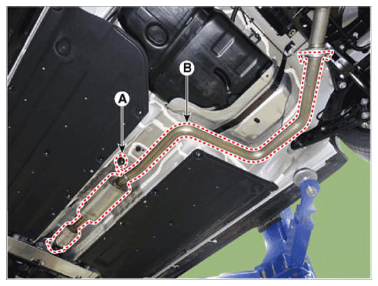

LEMON Manuals
: Even more car manuals for everyone: 1960-2025
Home
>>
Hyundai
>>
2022
>>
Elantra N Line, Standard Trans
>>
Repair and Diagnosis
>>
Engine Mechanical
>>
Blowers, Superchargers & Turbochargers
>>
Intake And Exhaust System - 1.6L (Except HEV)
>>
Muffler And Catalytic Converter
>>
Repair Procedures
>>
Removal and Installation
>>
Catalytic Converter & Center Muffler
Catalytic Converter & Center Muffler
Remove the catalytic converter & center muffler.
Disconnect the hanger (A).
Remove the catalytic converter & center muffler (B).
Tightening torque:
39.2 - 58.8 N.m (4.0 - 6.0 kgf.m, 28.9 - 43.4 lb-ft)

Courtesy of HYUNDAI MOTOR AMERICA
Install in the reverse order of removal.
NOTE:
When installing, replace with new gaskets.